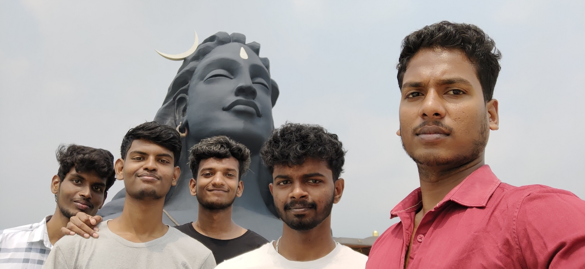

Muthupet Lagoon
Posted on January 1, 2023 by V A S A N
I would recommend to reach morning so that you can spend good quality time. You need a boat to travel around the Lagoon. They charge like 1500Rs for a 12 seater boat, no small boats available. Dont expect any safety features in the boat, anyhow the water is shallow and you can actually walk all the way till sea. There are small islands where you can stop and hangout. Travelling to these islands takes like 1 hour by boat. The ride itself was cool, I was able to see jelly fishes, flying fishes etc. Remember this is a very remote area and you wont even get drinking water. So don't forget to pack all the food, and water you need. You would need to pay extra for the permit and parking. I wont recommend this place for families with young naughty kids. .
Thanjavur Brihadesshwara Temple
Posted on May 17, 2023 by Raja Ram
Finally a long waited trip to Thanjavur just to visit the Brihadesshwara Temple. We reached around 4.30 pm in the evening after covering the Maratha Palace, Saraswathi Mahal Library and Art Gallery. It was a dream come true moment for me and my family. Must visit place..
Kodaikanal
Posted on feb 24, 2023 by Shanmuga Rajeshwaran
A small waterfall which is formed by the water overflowing from Kodaikanal lake. On sides of the Kodaikanal ghat road. Easily accessible and have enough parking space. Good place to relax and have something after traversing through the curves of the ghat road..
isha sivan statue
Posted on oct 26, 2023 by premkumar
we go to Coimbatore for a weekend trip, to visit ISHA Center, . Given that I like to experience and witness variety of events in my life, I quickly said YES. I also wanted to see Adiyoga Shiva Statue which was unveiled near ISHA Campus just few months ago. I had added this visit to my bucket list, when I saw the event LIVE on TV. However, our plans cancelled due to various conflicts...
Rockfort trichy
Posted on april 12, 2023 by vicky
The view extending to miles all around this area is unparalleled. Go in the late afternoon and sit at the top and marvel at the devotees and young couples who are there both for devotion and enjoyment. The entrance to the rock is better than any souk you will see in middle east. If you are lucky you might get to feed with a banana to the temple elephant and hear a classical musical concert going on the middle temple - the hall is unfortunately not accessible to non accessible to non Hindus..